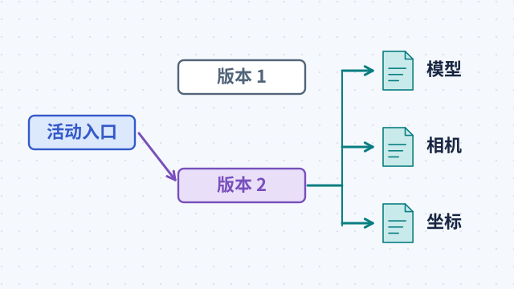

序言
打开一份三维模型时，顶点或高斯文件只提供了部分信息。渲染还要知道用哪套相机、模型放在哪个坐标系，复现实验还需知道参数和检查点。清单把这些彼此相关的文件指向同一份可识别的版本。
用一份清单回答四个问题
可以把清单看作模型目录的说明书。它至少应让读取者知道这是什么版本、入口文件在哪里、每个依赖相对谁定位、数据遵循什么约定。文件名相同不能代替版本身份。两个实验都有 cameras.json，却可能使用不同的焦距、图像编号和世界原点。
可以先把依赖画成树。入口指向一个版本，版本指向模型、相机和变换文件。程序加载时沿树逐条解析，并可以报告第一个打不开或身份不符的节点。尝试把路径散在若干界面按钮里，往往只能知道“预览失败”，难以知道失败发生在树的哪一层。
假设版本一使用正对门框的相机，版本二则把场景缩放到另一套世界坐标。如果拿版本二的几何去配版本一的相机，渲染可能正常启动，但门框会出现在错误的位置。因此坐标变换、长度单位和相机约定也属于模型版本的一部分，并非仅供人阅读的附注。
换工作目录试一次
设清单在 scene/v2/model.json，里面写着相对路径 cameras/calibrated.json。如果约定以清单所在目录为基准，应该拼成 scene/v2/cameras/calibrated.json。程序从终端的哪个目录启动都不该改变这个结果。若系统还存在项目级清单，它又可以拥有另一个明确声明的基准。
检查时在两个版本下各放一份同名相机文件，里面填不同版本号。切换工作目录，再分别打开版本一、二，比较真正读到的版本。这样的检查能发现串读。程序即使打开了一个真实存在的相机文件，里面的版本号也可能属于另一次实验。
何时让别人看见新版本
一种常见布局是给每个版本使用独立目录，另有一个小入口指明当前活动版本。更新时先写齐新版本文件并验证，再在同一文件系统内用重命名替换那个小入口。并发读者打开入口时，可以读到旧入口或新入口，减少碰到半截清单的机会。
这一操作没有把一堆分散文件变成一个数据库事务。旧版本若立即被删除，先前已经取得旧入口的读者仍可能在打开依赖时失败。应当给读者留出合理的版本保留期。若还要求断电后数据可靠落盘，刷写文件和父目录等持久化问题也需要单独处理。
大体积模型可在清单中附内容摘要，例如 SHA-256。接收端重算摘要，可以确认传输后字节是否与预期一致。摘要相同不能证明坐标、几何质量或训练指标正确，那些仍需要对应的领域验收。
如果新版本正在准备时磁盘空间不足，应当能恢复到“旧入口仍然指向完整旧版本”这一状态。教学测试可以先产生缺一份相机的候选，然后模拟重新启动读取者。它应该仍能读旧模型；只有候选完整、验收满足以后，入口才切换。这比只演示一次顺利发布更接近真实使用。


在移动过的副本里验收
把一套版本打包后解到完全不同的目录，暂时移走原目录，再从入口读回模型、相机与参数。若有符号链接，确认目标跟着包一同交付。最后选一张固定相机视角渲染，对照事先记录的几何标记位置。路径、版本和坐标三项都能在这一轮检查中得到具体结果。
另做一个失败例子，替换相机文件的几个字节或故意缺一项必需依赖，确认加载方能指出出错的是哪个版本、哪类文件。清单最有价值的时刻，往往正是它让一份“不完整但勉强能打开”的模型及早暴露出来的时候。